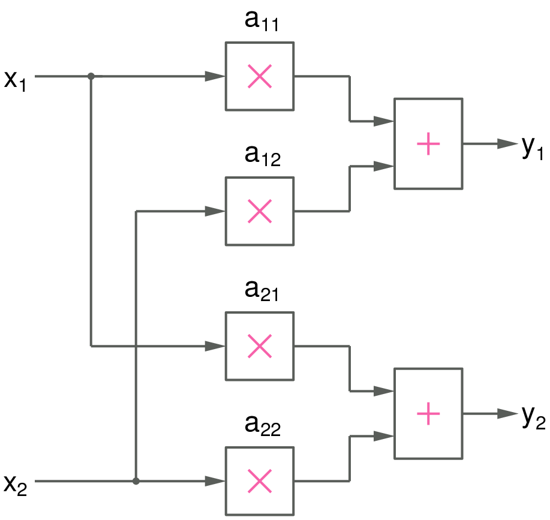
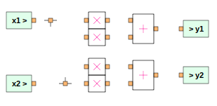

Subcircuits¶
To represent a complicated system with a schematic diagram, subcircuits (hierarchical blocks) are very useful. In this section, we will first explain how a simple subcircuit can be designed using the schematic capture GUI. We will then look at a more complex subcircuit which represents an induction motor model.
Linear transformation subcircuit¶
Let us see how to make up a subcircuit to implement the linear transformation given by,
where \(x_1\), \(x_2\) are the input nodes (variables), and \(y_1\), \(y_2\) are the output nodes. Eq. (1) can be implemented as follows.
{kind=link}
To convert this block diagram to a GSEIM subcircuit, you can use the step-by-step procedure given below.
Start a new project. A canvas with an
Optionsblock will appear. Double-click on the options block, and setIdandTitle. Note that Id should only contain letters, digits, and the underscore character. In theGenerate optionfield, chooseHier Blockto indicate that this schematic diagram is for a hierarchical block (subcircuit) and not a stand-alone system. It may be a good idea to start theIdwiths_(sfor subcircuit) as a convention; however, it is not really required.
The next step is to bring in the required elements (blocks) from the library. We need four
multscl(multiply by scalar) elements and twosum_2elements. To bringmultsclinto the canvas, select it from the library, and drag it into the canvas.Place the components, keeping in mind the connections you will need to make.
Next, we need to provide pads for our subcircuit. We need two source pads (for \(x_1\) and \(x_2\)) and two sink pads (for \(y_1\) and \(y_2\)). The source pads will show up as input pads when we invoke this subcircuit from a higher level; similarly, the sink pads will show up as output pads.
Double-click on each of the source and sink pads and name those as
x1,x2,y1,y2. Assignx1to the source pad which you brought in first, andx2to the one you brought in later. Similarly, name the sink pad you brought in first asy1and the other sink pad asy2. When this procedure is followed, the subcircuit, when invoked, will have the orderx1,x2for the input nodes (ports), andy1,y2for the output nodes.
Your schematic should now look like this:
Connect the elements as required. To make a connection between two ports, click on one of the ports and then the other.
Our next step is to assign the multiplier parameter (
k) of eachmultsclelement the values shown below.Note that we will need to make
a11,a12,a21,a22, assignable when this subcircuit is invoked. This is achieved with the help of global parameters. We first need to add four global parameters and name thema11,a12,a21,a22, one-by-one. Click onEdit\(\rightarrow\)GParms\(\rightarrow\)Add gparm, and change the name as shown below.We now map the global parameters to the
kparameters of themultsclelements. Double-click on the topmultsclelement in the schematic and changektoa11. Similarly, changekfor the other threemultsclelements.
Save the subcircuit schematic. It is a good practice to use a file name which reflects the name (
Id) of the subcircuit. In our example, it would bes_linear_2.grc.Click on
Generate flow graph. This creates a file~/gseim_gui/subckt/s_linear_2.hblock.yml. You will find that the.grcfile in the previous step appears in thegrc_sourcefield of the.ymlfile.End your GSEIM session and start it again. You will find the newly added subcircuit listed under
GRC Hier Blocksas shown below: Note that the label which appears in this list corresponds to theTitlevalue (not theIdvalue) of your subcircuit.
Drag and drop the subcircuit into the canvas.
Double-clicking on the subcircuit opens the following dialog box, enabling the user to edit the parameter values as required.

{kind=link}
{kind=link}
{kind=link}
{kind=link}
{kind=link}
{kind=link}
{kind=link}
{kind=link}
{kind=link}
Induction motor subcircuit¶
We now consider the induction motor model described in xbe templates. The model equations are reproduced below.
where
with
We first rewrite Eqs. (2) to (6) such that each of them can be implemented using basic blocks such as adder, multiplier, integrator, etc.
As an example, Eq. (4) can be rewritten as,
which can be implemented using the mult_2 element (to multiply \(\omega _{rm}\) and
\(\psi _{qr}\)), and the sum\_2 and integrator elements described in
xbe templates.
Treating
Eqs. (2) to (6)
in this manner, we obtain the subciruit shown below
(the .grc file is
~/gseim_gui/subckt_grc/s_indmc.grc).
{kind=link}
The following additional points about the implementation may be noted:
Virtual (dummy) sources and sinks (shown in light yellow colour) are used in order to make wiring less cumbersome. For example, note the virtual sink marked
>idrand the virtual source markedidr>, the two corresponding to the same node.Input and output pads (shown in light green colour) are used to indicate the input and output ports the subcircuit symbol will have when it is invoked (from a higher level). For the induction machine subcircuit,
vds,vqs,tlare the input ports, andwrmis the output port.The subcircuit has the following parameters:
j,llr,lls,lm,poles,rr,rs, which correspond to \(J\), \(L_{lr}\), \(L_{ls}\), \(L_m\), \(P\), \(r_r\), \(r_s\), respectively, in Eqs. (2) to (6). In implementing the equations, we need to compute quantities which depend on these parameters. For example, consider Eq. (7) for :mat:`i_{ds}`, implemented using thesum\_2element marked ass6in the figure. This element gives\[i_{ds} = k_1\psi _{ds} + k_2\psi _{dr},\]which requires \(k_1 = \displaystyle\frac{L_r}{L_mL_e}\), \(k_2 = -\,\displaystyle\frac{1}{L_e}\) to be assigned. For all such assignments, the user is expected to supply a python file specific to the concerned subcircuit, and it needs to be in the same directory as the
.ymlfile for that subcircuit. Fors_indmc, the python file is~/gseim_gui/subckt/s_indmc_parm.py, and is reproduced below.1 2 3 4 5 6 7 8 9 10 11 12 13 14 15 16 17 18 19 20 21 22 23 24 25 26 27 28 29 30 31 32 33 34 35 36 37 38 39 40 41 42 43 44 45 46 47 48 49 50 51 52 53 54 55 56 57 58 59 60 61 62 63 64 65 66
def s_indmc_parm(dict1): j = float(dict1['j']) llr = float(dict1['llr']) lls = float(dict1['lls']) lm = float(dict1['lm']) rr = float(dict1['rr']) rs = float(dict1['rs']) poles = float(dict1['poles']) ls = lls + lm lr = llr + lm le = (ls*lr/lm) - lm l1 = lr/(lm*le) l2 = 1.0 + (lls/lm) l3 = lls/lm x1 = 0.75*poles*lm x2 = 0.5*poles i1_k = 1.0/j s1_k1 = 1.0 s1_k2 = -rs s2_k1 = 1.0 s2_k2 = -rs s3_k1 = -rr s3_k2 = -1.0 s4_k1 = -rr s4_k2 = 1.0 s6_k1 = l1 s6_k2 = -1.0/le s7_k1 = l1 s7_k2 = -1.0/le s8_k1 = 1.0/lm s8_k2 = -l2 s9_k1 = 1.0/lm s9_k2 = -l2 m1_k = x1 dict1['i1_k'] = '%14.7e' % (i1_k) dict1['s1_k1'] = '%14.7e' % (s1_k1) dict1['s1_k2'] = '%14.7e' % (s1_k2) dict1['s2_k1'] = '%14.7e' % (s2_k1) dict1['s2_k2'] = '%14.7e' % (s2_k2) dict1['s3_k1'] = '%14.7e' % (s3_k1) dict1['s3_k2'] = '%14.7e' % (s3_k2) dict1['s4_k1'] = '%14.7e' % (s4_k1) dict1['s4_k2'] = '%14.7e' % (s4_k2) dict1['s6_k1'] = '%14.7e' % (s6_k1) dict1['s6_k2'] = '%14.7e' % (s6_k2) dict1['s7_k1'] = '%14.7e' % (s7_k1) dict1['s7_k2'] = '%14.7e' % (s7_k2) dict1['s8_k1'] = '%14.7e' % (s8_k1) dict1['s8_k2'] = '%14.7e' % (s8_k2) dict1['s9_k1'] = '%14.7e' % (s9_k1) dict1['s9_k2'] = '%14.7e' % (s9_k2) dict1['m1_k'] = '%14.7e' % (m1_k) dict1['x2'] = '%14.7e' % (x2)
The
k1andk2values for thesum_2element marked ass6in the schematic are computed in the above python function ass6_k1ands6_k2, respectively. At the end of the function, all of these computed values are stored in the parameter dictionary for this subcircuit. With this mechanism, the user has significant flexibility in implementing element equations.The user can define
output parametersfor a subcircuit and use those at higher levels. The output parameters can be mapped to nodes within the subcircuit or to the output parameters of the blocks involved in the subcircuit. These features provide a mechanism for viewing various quantities of interest at different levels when the system is simulated.